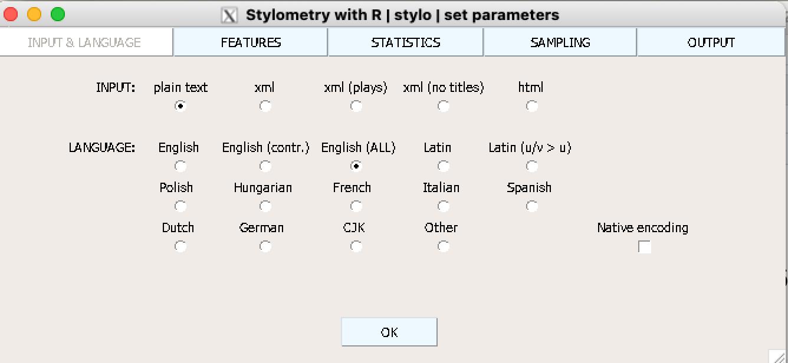

В этом уроке мы рассмотрим возможности стилометрического анализа с использованием пакета stylo. К пакету прилагается подробный HOWTO, который стоит изучить перед использованием.
library(stylo)
### stylo version: 0.7.5 ###
If you plan to cite this software (please do!), use the following reference:
Eder, M., Rybicki, J. and Kestemont, M. (2016). Stylometry with R:
a package for computational text analysis. R Journal 8(1): 107-121.
<https://journal.r-project.org/archive/2016/RJ-2016-007/index.html>
To get full BibTeX entry, type: citation("stylo")
Возможности этого инструмента мы исследуем на корпусе древнегреческой литературы, подробнее о котором можно прочитать в препринте. Для этого эксперимента корпус был немного урезан. Файл в формате .zip надо забрать по ссылке и положить в рабочую директорию.
Тексты могут быть на любом языке, но обязательно в кодировке Unicode.
На Mac может потребоваться поставить XQuartz.
16.2stylo()
Главная рабочая лошадка этого пакета – функция stylo(). Если вызвать ее без аргументов, то запустится GUI (который можно отключить).
stylo()
На вкладке Input & Language выбираете формат файла и язык.

На вкладке Features указываете, как разбивать текст: на слова, символы, словесные или символьные энграмы. Также можно уточнить, что делать с прописными буквами (в нашем случае это нерелевантно). Параметр MFW указывает, сколько слов использовать для анализа. CULLING задает порог отсечения для слов: 20 означает, что будут использованы слова, которые встречаются как минимум в 20% текстов, 0 – все слова, 100 - только те, которые есть во всех текстах корпуса.
Следующая вкладка определяет метод, который будет использоваться для анализа.
Можно также уточнить метод выборки.
И, наконец, формат, в котором следует вернуть результат.
Без графического интерфейса команда будет выглядеть так.
Подписи и цвета функция подбирает автоматически. Попробуйте использовать другие меры расстояния и другие статистические методы, и сравните результат. После каждого запуска функции в рабочей директории сохраняются файлы с конфигурацией, признаками, которые использовались для анализа и, опционально, визуализация.
Если stylo() возвращает результат, который должен интерпретировать человек, то classify() используется для машинного обучения с учителем. Вызов функции без аргументов вернет GUI, похожий на тот, что мы видели выше. Отличие будет на вкладке “Статистика”.
Среди доступных методов классификации: Delta, k-NN, SVM, Наивный Байес, метод ближайших центроидов. Подробнее о них мы будем говорить позже, а пока можно поэкспериментировать с Delta.
Перед запуском функции необходимо создать в рабочей директории две папки: primary_set (скачать) и secondary_set (скачать). В первой находится так называемые обучающие данные, во второй - тестовые (контрольные) данные. Обычно это тексты неизвестного авторства, но к ним можно добавить и несколько произведений известного авторства для дополнительного контроля. Мы примем за спорные отрывок из “Греческой истории” Ксенофонта, диалог “Софист” Платона, “Наблюдателей” Лукиана и “Против софистов” Исократа.
result <-classify(classification.method ="delta",culling.of.all.samples =FALSE,analyzed.features="w", culling.max=20,culling.min=20,ngram.size=1,mfw.min =100,mfw.max =100,mfw.incr =0,gui =FALSE,corpus.lang ="Other")
После того, как функция вернет управление, в рабочей директории появится несколько файлов, среди них – final_results.txt. В нашем случае успех 100%, но не стоит переоценивать этот результат: мы взяли четырех очень разных авторов.
result$expected == result$predicted
[1] TRUE TRUE TRUE TRUE
Теперь можно поэкспериментировать с разными методами и настройками.
16.4rolling.delta()
Еще одна “фирменная” функция stylo называется rolling.delta(). Она подходит для тех случаев, когда текст написан в соавторстве (или мы предполагаем, что это так). Delta “прокатится” по всему тексту и для каждого его отрывка оценит вероятность того, что он создан тем или иным автором. Разумеется, это имеет смысл лишь в том случае, если у нас, во-первых, достаточно длинный спорный текст, а, во-вторых, есть понятные кандидаты.
Для демонстрации работы функции воспользуемся примером, который придумали редакторы “Системного Блока”. Они составили текст из отрывков «Драмы на охоте» А. П. Чехова и «Жизни Арсеньева» И. А. Бунина. Собранное «произведение» (которое вы можете найти здесь) состоит из четырёх частей:
первой половины «Драмы на охоте» (~ 26939 слов);
первой книги «Жизни Арсеньева» (~ 14964 слов);
второй половины «Драмы на охоте» (~ 26250 слов);
второй книги «Жизни Арсеньева» (~ 15571 слов).
У этой функции нет графического интерфейса. Обучающие данные по ссылке. “Спорный” текст надо сохранить в папку под названием test_set (или подобным).
Функция oppose() реализует контрастивный анализ, помогая понять, каких слов авторы избегают, а какие – предпочитают. Функция возвращает два файла: words-preferred.txt и words-avoided.txt. Для сравнения возьмем Платона и Исократа (ссылка).
Об этой функции см. подробнее здесь. На входе она требует уже подготовленные таблицы с частотностями.
data("galbraith")# забираем 8-й ряд из датасета:my_text_to_be_tested = galbraith[8,]# исключаем 8-й ряд из датасетаmy_frequency_table = galbraith[-c(8),]# поехали:imposters(reference.set = my_frequency_table, test = my_text_to_be_tested)
coben lewis rowling tolkien
0.38 0.00 1.00 0.00
Функция возвращает вектор вероятностей, где значения, близкие к 1, соответствуют наиболее правдоподобным кандидатам на авторство.